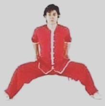
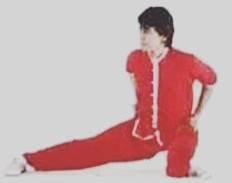
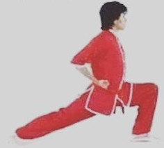

Kung Fu Dokumentation
Tägliche Übungen Qi Gong Form HandtechnikenStände
Um einen Stand als Basis zur Dehnung zu nutzen hängt man "Yā tuǐ" (压腿) an. Z.B.: Mǎ bù yā tuǐ.
Übersicht StändeGōng bù / 弓步

Mǎ bù / 馬步
Bedeutet übersetzt Pferdestand.

Pū bù / 仆步

Xū bù / 虚步

Ding bu
TODO: chinesisch und pinyin fehlt
Sìliù bù / 四六步
TODO Bild
Tritte
Zhèng tī tuǐ / 正踢腿
Tritt nach vorne bis zum Kopf.
Lǐ hé tuǐ / 里合腿
Kreisender Tritt nach innen
Wài bǎi tuǐ / 外擺腿
Kreisender Tritt nach außen
Cǎi jiǎo / 踩脚
Gesteckter Tritt nach vorne mit Schlag auf den Fuß. Auch über kreuz.
Li chue bai
TODO
Dàn tuǐ / 弹腿
Tritt geradeaus.
Dēngtuǐ / 蹬腿
Wegdrücktritt mit der Hacke aber mit geradem Rücken.
Schläge
Chōngchuáng / 冲床
Faustschlag
Tuīzhǎng / 推掌
Schlag mit Handfläche
Sprünge
Demonstration verschiedener Sprünge von Meister Li
Èr tī jiǎo / 二踢脚
Sprungtritt.
Xuanfengjiao / 旋风脚
Butterfly kick / 旋子
Bedeutet wortwörtlich Kreis.
WikipediaDemonstration von Meister Li:
Demonstration Demonstration doppelt mit RollsprungUmdrehsprungtritt
TODO: braucht man bei der Säbelform
Demonstration von Meister LiÜbungen
Dān pāi jiǎo / 单拍脚
TODO: irgendwie heißt der Sprungtritt scheinbar auch so? Was ist der Unterschied zu Cai jiao?
Demonstration von Meister Li:
Fān yāo / 翻腰
Qián sǎo tuǐ / 前扫腿
Beinfeger gegen den Uhrzeigersinn
Hòu sǎo tuǐ / 后扫腿
Beinfeger im Uhrzeigersinn
Zi shue, Li yu da din, Ulum jiao du
DemonstrationTODO
Faustformen (Tàolù / 套路)
1. Form: Liánhuán quán / 连环拳
Demonstration von Meister Li2. Form: Tōng bèi quán / 通背拳
Demonstration von Meister Li Demonstration von Meister Li7-Sterne-Form / 七星拳
Demonstration von Meister Li1. Gigi juen
TODO
2. Gigi juen
TODO
Mantis
Demonstration von Meister Li in WhatsApp-Gruppe
TODO: war das Tang Lang Quan?
Xiǎo hóng quán / 小洪拳
Dà hóng quán / 大洪拳
Demonstration von Meister Li in WhatsApp-Gruppe
Waffenformen
1. Stockform: Yīn shǒu gùn / 阴手棍
Demonstration von Meister LiQí méi gùn / 齐眉棍
TODO
Säbel (Shaolin Dan?)
TODO
Andere Formen
? Andere Säbelform ?
TODO
Demonstration von Meister Li Demonstration von Meister LiLi Chn Jun Drunken Master
TODO
Demonstration von Meister LiSpeerform Qiang Shu
TODO
Demonstration von Meister Li